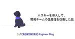

クラウドワークス エンジニアブログ
https://engineer.crowdworks.jp/
日本最大級のクラウドソーシング「クラウドワークス」の開発の裏側をお届けするエンジニアブログ
フィード

husky(ハスキー)を導入して開発チームの生産性を改善した話
クラウドワークス エンジニアブログ
こんにちは、株式会社クラウドワークスでエンジニアをしている、松尾です。 早いものでエンジニアになって、1.5年です。いや〜〜早い。 時の流れ早すぎ。。 最近、huskyとlint-stagedを用いて、下記の仕組みを作りました ステージングしたファイルに対して、コミット時stylelint, eslintを実行して、エラーの箇所を気づけるようになる 上記の具体的な解説記事というよりかはやってみた結果どうなん？的な記事です。 なぜやった？ huskyで何をした？ 「コミット時に毎回lintが実行されたら、ちょっと待たされるのでは？」という疑問に解答 【ビフォーアフター】husky導入の前後 【ビ…
13時間前

Postmaster Toolsの迷惑メール率をDatadogで監視する
クラウドワークス エンジニアブログ
こんにちは。エンジニアの砂川です。 2023年10月頃にGoogle・Yahoo!から新しいメール送信者ガイドラインが出されました。 該当するメール送信者は、ガイドラインに沿っているか確認をし、沿っていない場合は対応する必要があります。 blog.google support.google.com 対応完了しきった皆様、お疲れ様でした。 絶賛対応中の方々、頑張っていきましょう。 ところで皆さんGmailのPostmaster Toolsの迷惑メール率の監視はいかがでしょうか? クラウドワークスではGmailガイドラインで定めているPostmaster Toolsの迷惑メール率を監視し、閾値を超…
1ヶ月前
UDXチームの立ち上げ〜現在の取り組みを紹介します！
クラウドワークス エンジニアブログ
こんにちは、エンジニアの井上と申します。 2023年6月にクラウドワークスへ入社しました。 私が所属しているのは2023年5月に新しく設立された「UDX」というチームです。 この記事では、UDXチームの立ち上げ〜取り組みまでを紹介したいと思います！
2ヶ月前
良いチームについて考え、新しいチームミッションを決めた話
クラウドワークス エンジニアブログ
crowdworks.jpでエンジニアリングマネージャー兼スクラムマスターをしている久村です。 2021年からエンジニアリングマネージャーをしており、昨年の5月より1つのチームのスクラムマスターをすることになりました。 スクラムマスターは、良いチームに向き合い続けるものだと思います。 良いチームを自分一人で考えることもあれば、チームで考えることもあります。 今回はスクラムマスターとして、チームで良いチームについて考え、その後に新しいチームミッションを決めた内容を記事にしようと思います。
2ヶ月前
開発責任者がやるべきことの気づきと"Think Like a CTO"
クラウドワークス エンジニアブログ
1年をふりかえる 年の瀬ご多端の折、皆様におかれましては本年も大変お世話になりました。crowdworks.jpの開発をしているプロダクト開発部部長の@hihatsです。 本記事はクラウドワークスAdvent Calendar 2023 シリーズ2の25日目の記事です。 今回は、プロダクト開発部として今年取り組んできたことと、その中での気づき、「Think Like a CTO」という書籍の話にも触れていきます。
3ヶ月前
crowdworks.jp のデザインシステム構築活動を振り返る 2023 (実装編)
クラウドワークス エンジニアブログ
この記事はクラウドワークス Advent Calendar 2023 シリーズ 1 の 21 日目及び、デザインシステム Advent Calendar 2023 21 日目の記事です。 こんにちは、crowdworks.jp のデザインシステム構築に携わっているエンジニアの @t0yohei です。 2023 年は crowdworks.jp にとってデザインシステムの実装元年でした。そんな実装元年において、エンジニアとして実施したことを書いてみました。 デザインシステムを実装中の方、これからデザインシステムを実装していこうという方の参考になれば幸いです。 目次 デザインシステムを学ぶ De…
3ヶ月前
インボイス対応を経て感じたPjMとPdMの違い
クラウドワークス エンジニアブログ
この記事はクラウドワークスAdvent Calendar 2023 シリーズ2の19日目の記事です。 こんにちは。crowdworks.jp プロダクトマネジメントチームのチャンタマ（@tmchannel）です。プロダクトマネージャーとしていろんなことをやってます。 世は師走、今年を振り返ってみると、やはり一番に思い浮かぶのはインボイス制度ですね。 なんといっても、誰が何を言おうと、何がなんでもインボイスです。 （とまで書いている段階で、今年の漢字2023が「税」と発表されました。ですよね） 2022年10月頃からインボイス対応の担当として（それはもう、本当に！あちこち）駆け回ってきたなかで、…
3ヶ月前
DMARCレポートを眺めるのにdmarc-visualizerがおすすめ
クラウドワークス エンジニアブログ
DMARCレポートをちょっと眺めたい時に便利なツールがdmarc-visualizerです。
3ヶ月前
ChatGPTでユーザの質問に回答するチャットボットを作ろうとしたけど、導入に失敗しました
クラウドワークス エンジニアブログ
OpenAIのAPIを使用してチャットボットを作りましたが、うまくいかなかったためお蔵入りしました。今回はその供養のため、どのようなことをやったかを書き残そうかと思います。
4ヶ月前
2023年 crowdworks.jp の SRE チームでやったこと
クラウドワークス エンジニアブログ
crowdworks.jp の SRE チームが2023年にやったことを記載していきます。
4ヶ月前
本業、副業、趣味でソフトウェア開発している話
クラウドワークス エンジニアブログ
この記事は クラウドワークス Advent Calendar 2023 シリーズ 1の2日目の記事です。 こんにちは。crowdworks.jp でエンジニアをしている高橋です。 この記事は本業、副業、趣味でソフトウェア開発をしていて感じたことや経験を振り返ったポエムになります。技術的な要素はなく、働き方の話がメインになります。 はじめは、個人のブログや個人利用の文章共有サービスにて書き残そうと思いましたが、フリーランスや副業関連のサービスを提供している側の会社に所属していることもあり、現在の状況について、誰かの参考になればと思い、クラウドワークスのエンジニアブログに書き残すことにしました。
4ヶ月前
crowdworks.jp のフロントエンド活動を振り返る2023
クラウドワークス エンジニアブログ
この記事はクラウドワークス Advent Calendar 2023 シリーズ 1の1日目の記事です。 クラウドソーシングサービス「クラウドワークス」（以下 crowdworks.jp ）にてエンジニアをしております、フロントエンドの可能性をしつこく信じ続ける@okuto_oyamaです。 一昨年・去年と引き続き、今年もアドベントカレンダー初日の盛り上げ手としてやっていきます。よろしくお願いします。 フロントエンド活動の振り返りをしてみよう 一昨年・去年もフロントエンド活動の振り返りをしてみましたが、今年もやっていきます。 qiita.com engineer.crowdworks.jp
4ヶ月前
StackBlitzを使ったトレーニング資料を作っている話
クラウドワークス エンジニアブログ
はじめに こんにちは、クラウドログ事業推進部でエンジニアをしている越阪部です。 普段は、工数管理SaaSアプリ「CrowdLog」のフロントエンド開発推進に従事していて、開発基盤部分の検討と整備や、メンバーのスキルアップ施策などに取り組んでいます。 今回はその取り組みの中で、ハンズオン形式のトレーニング資料を用いてメンバーのスキルアップを図っているお話を紹介させていただきたいと思います。
5ヶ月前
Vue Fes Japan 2023 参加レポート
クラウドワークス エンジニアブログ
皆様こんにちは。クラウドソーシングサービス「クラウドワークス」（以下crowdworks.jp）にてエンジニアをしております@okuto_oyamaです。今回は、10月28日に開催されたVue Fes Japan 2023の参加レポートをお届けします。
5ヶ月前
Vue.js で作る GridSystem
クラウドワークス エンジニアブログ
こんにちは、crowdworks.jp でエンジニアをしている @t0yohei です。最近はデザインシステム構築の一貫でコンポーネントライブラリの実装を行なっています。 今回は Vue.js を使って GridSystem を作るにはどうしたらいいか、どういうことを考える必要があるのかをお伝えしていこうと思います。 ※ このブログは、 Vue Fes Japan 2023 のセッション「Vueを使ってGrid Systemを実装した話 」の内容を補足するブログになっています。セッションをご覧になっていない方が読んでも問題ない形式になっておりますのでご安心ください。
5ヶ月前
データベース接続を伴うテストを並列化した話
クラウドワークス エンジニアブログ
はじめに クラウドログ事業推進部でバックエンドエンジニアをしている馬渕です。 早いもので入社してから8ヶ月が経ちました。 最初はプロダクトのバックエンドの実装から始まり、インフラ周りを少しだけ、最近ではフロントエンドの実装にも挑戦しています。 今回はいろいろと経験させていただいた中から、データベース接続を伴うGoのユニットテストで実行時間の短縮をした内容を投稿します。
5ヶ月前
LogStudyで進化するCrowdLog
クラウドワークス エンジニアブログ
はじめに こんにちは、CrowdLog開発チームの 孫、富田 です。 この記事では、CrowdLog内で２年半近く継続的に活動しているLogStudyについてご紹介したいと思います。 LogStudyとは、その名前が示すとおり「Log」＋「Study」、つまりCrowdLogでの学習活動のことです。 CrowdLogの開発チームには国内２０人、オフショア（フィリピン）７人のメンバーが所属しており、国内メンバーが主に企画・活動をおこなって来ましたが、最近ではオフショアメンバーも参加して活動しています。 LogStudyはトップダウンで行われるような技術研修ではなく開発者1人1人の想いで作り上げて…
5ヶ月前
SRE NEXT 2023 にスポンサーとして参加します
クラウドワークス エンジニアブログ
こんにちはSREチームでマネージャーをしている @bayashi_okです。 今回、株式会社クラウドワークスは、2023年9月29日(金)に開催される「SRE NEXT 2023」のブロンズスポンサーとして参加します。 また私自身はSRELounge運営メンバーとして、当日スタッフでの遊撃隊として参加をする予定です。 SRE NEXTとは 「SRE Lounge」のメンバーが中心となり運営・開催されるエンジニアのためのコミュニティベースのカンファレンスです。 過去 SRE NEXT 2020、SRE NEXT 2022 と開催され今年はオンライン/オフラインのハイブリット開催となりスタッフブロ…
6ヶ月前
経済産業省が提供するサービスのクライアントAPIを爆速生成してOSS公開までの手順を紹介してみる
クラウドワークス エンジニアブログ
株式会社クラウドワークスでエンジニアをしている、小西です。おすすめのサウナはウェルビー栄です。 2022年ごろからOSS活動をする機会が増え、OSSの公開にもチャレンジしていたりするのでOSSをテーマに記事を書いてみようと思います。 この記事でやろうとしていること 経済産業省が提供しているgBizINFOのクライアントAPI生成し、オープンソース化することとRubyGemsにアップロードするところまでをゴールとします。 gBizINFOは法人番号や法人名から企業等の活動情報が検索できるプラットフォームで、法人番号公表サイトやEDINET、職場情報総合サイトと紐付けして情報を取得することができま…
6ヶ月前
Vue Fes Japan 2023 にクラウドワークスのエンジニアが登壇します
クラウドワークス エンジニアブログ
Vue Fes Japan とは Vue Fes Japan は Vue.js 日本ユーザーグループが主催する日本最大の Vue.js カンファレンスです。 日本における Vue.js 開発者たちによる発表や、Vue クリエイター の Evan You や、 Nuxt.js・Vite などのコアコントリビューターの方たちも登壇されます。 昨年のオンラインカンファレンスを経て、今年は念願のオフライン開催が決定しました。 vuefes.jp 登壇情報 弊社からはクラウドワークスエンジニアの @t0yohei と @yamanoku と @53able それぞれ登壇いたします。
7ヶ月前
crowdworks.jpのマスタデータベースをAWS RDS MySQL 5.7から8.0にアップデートしました
クラウドワークス エンジニアブログ
CrowdWorks.jpでは、2023年8月にAWS RDS MySQL 5.7から8.0へのアップデートが完了しました。MySQL 8.0へのアップデートの手順と対応が必要な変更点について書きました。
7ヶ月前
チームのメンバー変更が良い機会だったので、スクラム改善を進めた話
クラウドワークス エンジニアブログ
crowdworks.jpでEMをしている久村です。 2023年5月より1つのチームのスクラムマスターをすることになりました。 私は開発者としてスクラムの経験はありましたが、スクラムマスターの経験はなかったです。 この記事では、直近チームで改善したことの内容と、そこからの学びを記事にしようと思います。
8ヶ月前
tfupdateで複数の.terraform.lock.hclを高速に一括更新する
クラウドワークス エンジニアブログ
tfupdate v0.7から、tfupdate lockコマンドが追加され、.terraform.lock.hclの更新に対応しました。この記事では、.terraform.lock.hclとは何かについておさらいした後、これまでの技術的な課題とその解決策について説明します。また、実装する上で調べた.terraform.lock.hclに記録されているハッシュ値の計算方法についても解説します。
8ヶ月前
MeowCopやめました（RuboCop設定の見直しをしてる話）
クラウドワークス エンジニアブログ
CrowdWorks ジャンヌチーム（技術的負債解消チーム）所属のlinyclarです。 「片付ければ片付く、片付けないから片付かない」をモットーに技術的負債解消に取り組んでおります。 長年放置され負債を生み出す原因となっているRuboCop設定の見直しを最近行っています。今回はその事例を共有します。なお、RuboCopでは各チェックのことをCopと言いますが、この記事では表現のしやすさから以下ルールと書いています。 MeowCopとは MeowCopとは、簡単に言えばStyleやLayoutなどのRuboCopのStyle Checkerなルールを無効化し、RuboCopをLinterとして…
9ヶ月前
元営業エンジニアのお話
クラウドワークス エンジニアブログ
こんにちは。2023年3月に入社した武藤です。法人様向けオンラインアシスタントサービス『ビズアシ』（以下ビズアシと省略）の開発を担当しています。 前職ではTypeScriptとPythonをメインの開発言語としていましたが、クラウドワークス入社後は未経験のRuby(主にRails)とPythonで開発をしています。 ビズアシはプロダクトごとに異なる開発言語で構成されているため、以前の開発手法とギャップが少なくストレスフリーで働けています。 入社後3ヶ月で感じた良いところと前職にはあったけどクラウドワークスに無いものを書いていきます。
9ヶ月前